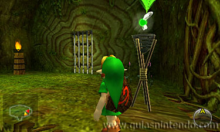

Guía The Legend of Zelda: Ocarina of Time

Cuando el Gran Árbol Deku te pregunte si le puedes ayudar, contesta que "Sí" y abrirá su boca para que puedas acceder a su interior.
Cuando hayas entrado (P0), verás que en el suelo de la primera sala hay una telaraña y en las paredes hay una escalera y una pared por la que puedes trepar para llegar a la planta P1. Al subir, avanza y llegará a un cofre que contiene el Mapa de la mazmorra.
Tras coger el mapa, sigue avanzando hacia el final del pasillo y allí encontrarás una puerta que se abre pulsando el botón "A" a su lado. Al entrar en esta sala, las puertas se cerrarán y aparecerá un enemigo en el centro de la estancia.
Este enemigo lanzará nueces contra ti y para derrotarle debes cubrirte con el escudo (pulsando el botón "R"), de forma que la nuez rebote y le dé al enemigo. Cuando le des un golpe, saldrá corriendo y debes acercarte a él rápidamente antes de que se vuelve a esconder para que te dé información. Te dirá que puedes romper la telaraña que estaba en la entrada si caes sobre ella saltando desde un lugar muy alto.
Seguidamente, las puertas se abrirán y debes meterte por la que está al fondo de la sala. En la siguiente habitación hay una plataforma flotando en el aire y unos muros por los que puedes trepar para llegar hasta un lugar elevado en el que hay un cofre grande que contiene el Tirachinas de las Hadas. Tras coger el tirachinas, date la vuelta y verás que en la pared de enfrente hay una escalera colgada de la parte de arriba de la pared. Para que la escalera caiga, la tendrás que disparar con el tirachinas y así podrás llegar a la puerta por la que entraste.
A continuación, vuelve hasta el cofre que contenía el Mapa y usa el tirachinas para eliminar a las arañas que están en la pared de al lado, si no irán a por ti cuando trepes por la pared (es la pared con enredaderas que está detrás del cofre). Tras eliminarlas, trepa por la pared para llegar a la planta superior (P2).
En la planta P2 encontrarás una puerta por la que te debes meter. Nada más entrar, la puerta se cerrará y verás que en el lado derecho hay un interruptor en el suelo junto a una antorcha encendida. Al pisar el interruptor verás como en el centro de la sala aparecen tres plataformas sobre las que podrás saltar para llegar hasta el fondo (cuando pasa un tiempo las plataformas vuelven a desaparecer). Si cruzas rápidamente, podrás llegar hasta el cofre que contiene la brújula (la cual indica la posición de todos los cofres de la mazmorra y el lugar donde se encuentra el enemigo final).
En el lado izquierdo de las plataformas que aparecen también puedes encontrar un pequeño cofre que contiene un corazón que te restaura la energía, y tras él hay una extraña araña dorada. Elimínala disparándola con el tirachinas y dejará un símbolo dorado que debes coger. Esta araña es una skulltula dorada (para poder llegar a esta zona, debes destruir una gran araña que aparece del techo golpeándola por la espalda cuando se gire).
Cuando vayas a salir de esta sala verás que hay unas rejas que te lo impiden. Para hacer que las rejas desaparezcan, debes encender la antorcha apagada que estaba junto a la puerta.

Para hacerlo, debes seleccionar un palo deku de tu inventario y asignarlo a uno de los botones "X" o "Y" (los palos deku te lo dan las plantas carnívoras cuando las eliminas y para asignarlos a un botón, debes pinchar en el palo y después sobre el círculo de la X o de la Y que está en el lado derecho de la pantalla inferior).
Coge un palo en tus manos pulsando el botón donde lo hayas asignado y acércate a la antorcha encendida para que comience a arder. Rápidamente ve hacia la antorcha apagada y acerca el fuego de tu palo para encenderla. De esta manera, la reja se abrirá.
Sal de esta sala para llegar a la zona anterior y verás que en centro hay una gran telaraña que cubre todo excepto unos huecos. Al acercarte a los huecos donde no hay telaraña aparecerá una gran araña que deberás eliminar golpeándola en la espalda con la espada cuando se dé la vuelta. Después de eliminar a la gran araña, salta al vacío para caer con fuerza en el centro de la telaraña que estaba en el suelo de la entrada.
Al caer desde tanta altura, la telaraña se romperá y caerás en la planta P-1.
En la P-1 verás que hay una puerta detrás de una telaraña, un interruptor en el suelo y una antorcha apagada (en la reja que está al lado del interruptor encontrarás una skulltula dorada).

Al pisar el interruptor verás que la antorcha se enciende. Cuando se encienda, saca un palo deku y préndele fuego acercándolo a la antorcha. Ve rápidamente al lugar donde está la puerta y quema la telaraña que te impide pasar (para que la antorcha no se apague al cruzar el agua, debes hacerlo por donde no cubre).
Al meterte por la puerta llegarás a una habitación en la que hay un enemigo que te lanza nueces. Para destruir a este enemigo, debes cubrirte con el escudo pulsando el botón "R" para que la nuez rebote y le vuelva a dar a él.
Tras golpearle con la nuez, saldrá corriendo y debes perseguirle para llegar a su lado antes de que se vuelva a esconder. Habla con él y te dirá el orden en que tienes que eliminar a tres enemigos iguales que te encontrarás más adelante (el orden es 2, 3, 1).
En esta misma habitación verás que hay una puerta que tiene una reja y para que desaparezca la reja debes disparar con el tirachinas al ojo abierto que hay sobre ella (al disparar al ojo se cerrará).
En la siguiente habitación verás una plataforma cuadrada que se desplaza sobre el agua y un rodillo de pinchos en el centro de la habitación (si te subes en la plataforma te pincharás con el rodillo y caerás al agua). Para poder pasar al otro lado de la habitación tienes que meterte en el agua y en el lado izquierdo de la sala verás que hay un interruptor en el fondo. Pulsa el botón "A" para bucear y al tocar el interruptor, bajará el nivel del agua temporalmente.
Cuando baje el nivel del agua, sube sobre la plataforma para llegar al otro lado de la habitación, donde encontrarás una gran araña que te impide avanzar. Elimínala golpeándola con la espada por la espalda cuando se gire.
A continuación, ponte en el lado derecho del bloque que está pegado a la pared y pulsa el botón "A" para poder arrastrarlo hacia atrás. Muévelo hasta el final del hueco del suelo y después sube sobre él para llegar a la puerta que está en la plataforma elevada (para subir, tienes que pulsar el mando hacia adelante y el botón "A" simultáneamente)
Al entrar en la siguiente sala aparecerán unas rejas en las puertas. Para que desaparezcan debes prender un palo deku en la antorcha encendida y con él debes encender las otras dos antorchas que están apagadas.
Al entrar en la siguiente sala debes eliminar a una gran araña golpeándola por la espalda cuando se gire y después verás que en las paredes hay dos telarañas.
Saca un palo deku y préndelo con la antorcha para poder quemar las telarañas. Tras una de ellas verás una pared agrietada que de momento no podrás romper porque necesitas una bomba y detrás de la otra hay un pequeño agujero que te lleva a la primera sala que visitaste en esta planta.
Al llegar de nuevo a la primera sala aparecerás sobre una plataforma a la que antes no podías llegar. En esta plataforma hay una telaraña en el suelo y un bloque de piedra cuadrado.
El bloque de piedra lo tienes que empujar para tirarlo dentro del agua con el objetivo de poder llegar a la antorcha encendida que hay al otro lado (es la antorcha dorada que tenía un cofre al lado). Prende un palo deku con la antorcha y vuelve al lugar donde estaba la telaraña en el suelo para poder quemarla (para llegar a este punto, debes saltar sobre el bloque que tiraste en el agua y para quemar la telaraña te tienes que poner sobre ella y pulsar el botón "R" para agacharte).
Después de quemar la telaraña tírate por el agujero que hay debajo y caerás en la planta P-2.
Al caer en la planta P-2 verás que hay tres enemigos que te lanzan nueces. A estos enemigos los tienes que eliminar en un orden tal y como te indicó un enemigo que encontraste anteriormente (haciendo que sus nueces reboten en tu escudo al cubrirte con el botón "R").
Primero tienes que eliminar al del centro, después al de la derecha y por último al de la izquierda. Si los eliminas en este orden y después te acercas rápidamente para hablar con el enemigo de la izquierda, la reja que protege la puerta desaparecerá y podrás meterte por ella para llegar a la habitación del enemigo final: "GOHMA".
Al entrar en esta sala solo verás que hay cosas que caen del techo. Mira hacia arriba para encontrar a Gohma y a continuación bajará al suelo para comenzar a luchar.
Para derrotar a este enemigo tienes que dispararle con el tirachinas en el ojo cuando lo tenga de color rojo (mantén pulsado el botón "L" para que tu personaje apunte automáticamente al ojo). A continuación, cuando el enemigo esté aturdido, golpéale continuamente con la espada. Este proceso lo tendrás que repetir 3 veces.
De vez en cuando, este enemigo se sube al techo y lanza unos huevos que al rato se convierten en pequeños enemigos. A estos pequeños enemigos los puedes eliminar golpeándoles con la espada.
Cuando hayas derrotado a Gohma, en el suelo aparecerán un contenedor de corazón y un haz de luz que te lleva al exterior del Árbol Deku.
En el exterior, el Árbol Deku te dará las gracias y te preguntará si quieres recibir más información. Si le contestas que "Sí" te hablará de la historia del Triforce.
Cuando el árbol termine de hablar te dará la Esmeralda de los Kokiri y te dirá que vayas al castillo de Hyrule para encontrar a la Princesa del Destino. Seguidamente, el Gran Árbol Deku morirá y aparecerás directamente en el Bosque Kokiri.